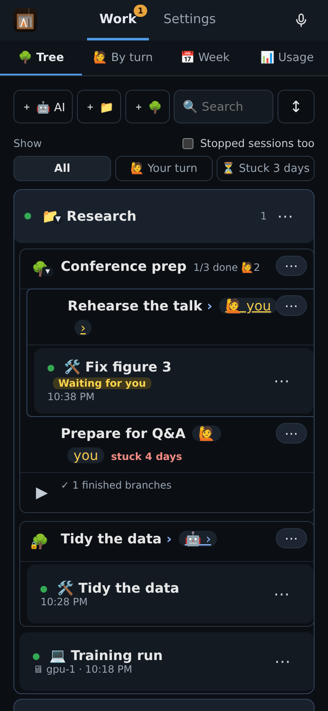
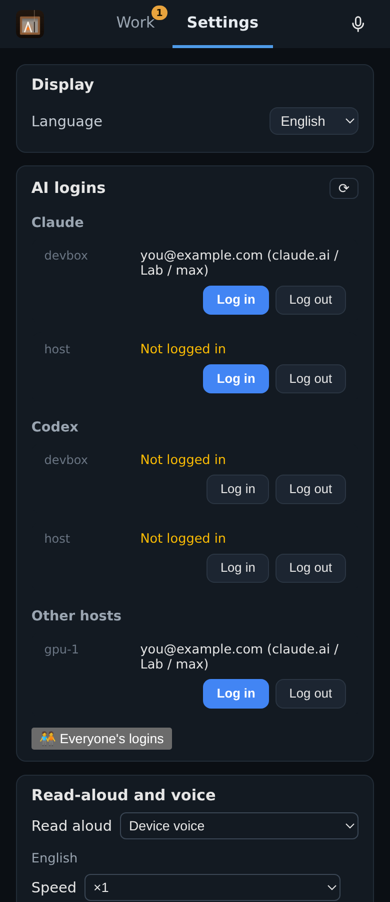
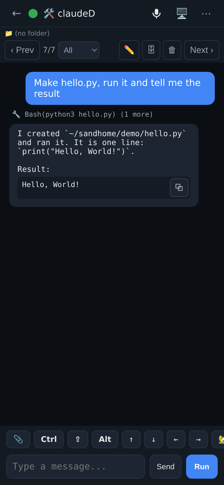
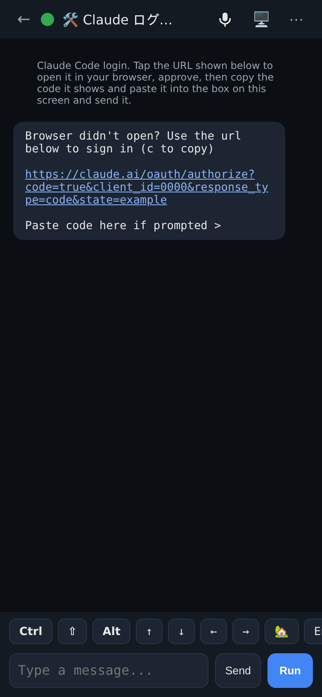
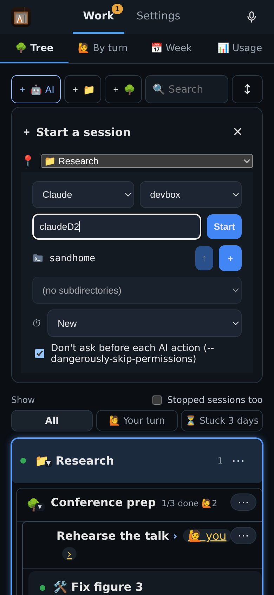
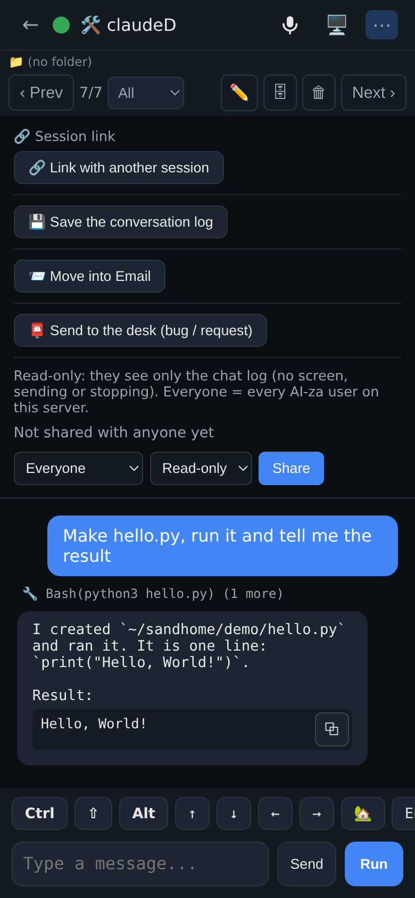
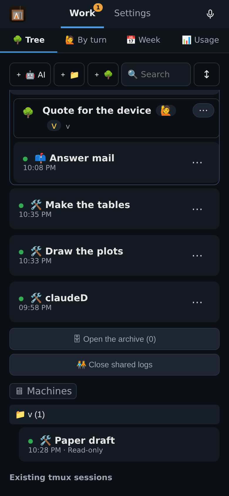
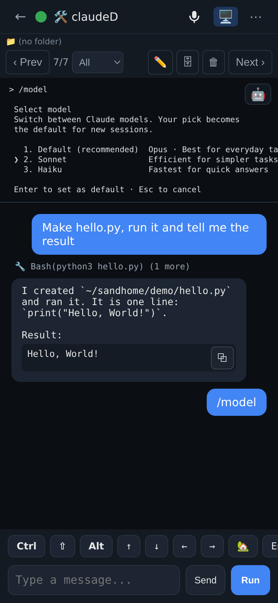
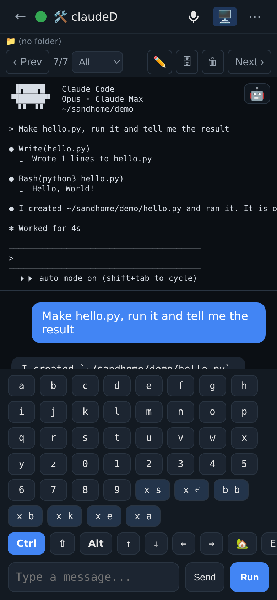
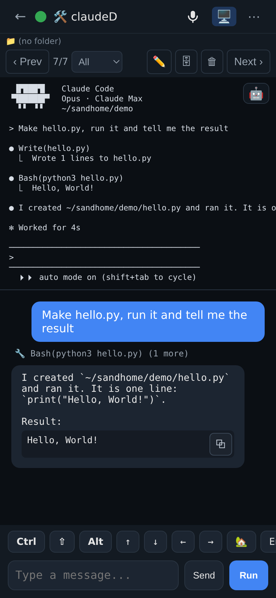

A guide to using AI agents on a server (Claude Code and others) from the browser on your phone or PC. Basics takes you from creating an account to doing everyday AI coding. The features installed differ a little from server to server, so ask your administrator about anything that is unclear.
AI-za is a chat-style screen that opens at https://<server>/. Instructions you write in the chat go to Claude Code running in your own private container on the server, and its replies come back to the chat.
Folders and work trees, By turn, patrol, notifications, passkeys, host and root sessions, other machines and so on are covered in Advanced.
If you have a Google account in a domain the administrator has allowed, you can create your own account from the AI-za screen (on servers where this feature is enabled). Otherwise, ask the administrator to create one for you.
https://<server>/ in your browser and, under “Sign in with Google”, choose an account in an allowed domain.- and _. It must start with a lowercase letter or _. Up to 32 characters.If you only use AI-za, you don’t need SSH. However, registering a passkey for mailbox and host sessions requires one SSH login, so it saves trouble to do it early. Follow whichever procedure matches your PC.
# On your PC: save the key you received and restrict its permissions
mkdir -p ~/.ssh
mv ~/Downloads/id_ed25519_<username> ~/.ssh/
chmod 600 ~/.ssh/id_ed25519_<username>
# First login. Right after logging in you are asked to set a password
ssh -i ~/.ssh/id_ed25519_<username> <username>@<server>In MSYS2, ~ is the MSYS2 home (e.g. C:\msys64\home\<name>), which is separate from the Windows home (C:\Users\<name>). Downloaded files are in /c/Users/<Windows name>/Downloads/. A key placed in MSYS2’s ~/.ssh is not visible to PowerShell’s ssh.
Windows 10/11 comes with ssh (if it is missing, add “OpenSSH Client” under “Settings → System → Optional features”). Run the following in PowerShell. chmod is not available, so permissions are restricted with icacls.
# Move the key to C:\Users\<Windows name>\.ssh\
mkdir -Force $env:USERPROFILE\.ssh
Move-Item $env:USERPROFILE\Downloads\id_ed25519_<username> $env:USERPROFILE\.ssh\
$key = "$env:USERPROFILE\.ssh\id_ed25519_<username>"
# Make it unreadable by anyone but you (cut inheritance, grant read to yourself only)
icacls $key /inheritance:r
icacls $key /grant:r "$($env:USERNAME):(R)"
# First login. Right after logging in you are asked to set a password
ssh -i $key <username>@<server>If you are told “UNPROTECTED PRIVATE KEY FILE” or “bad permissions”, run the two icacls lines again. In PowerShell the ~ in -i ~/.ssh/... is sometimes not expanded, which is why $env:USERPROFILE is used here.
Until you set it at this first login, your password cannot be used by anyone. From the second time on, you can log in with the same command.
-i every timePut the following in your config file and ssh aiza alone will log you in. The config file is ~/.ssh/config on Mac, Linux and MSYS2, and C:\Users\<Windows name>\.ssh\config (no extension) with the Windows built-in one. In either case, ssh reads the ~ in IdentityFile as your home.
Host aiza
HostName <server>
User <username>
IdentityFile ~/.ssh/id_ed25519_<username>aiza-set-email you@example.com once. You can then log in with the Google account for that email address.Along the top of AI-za are three tabs: Work (sessions and work trees), Inbox (a digest of new mail and the like; only for people who use it) and Settings. A session is one workplace that keeps running on the server (Claude Code or a shell); opening one brings up the chat screen. Open https://<server>/ in your browser and you land on Work.

| Where | What it means |
|---|---|
| Logo | What is AI-za (an explanation) |
| Work, Inbox, Settings | Tabs. The number on Work is how many items are “Your turn”. The browser’s Back button does not go back from one tab to another |
| 📖 | A screen for reading the server’s documentation (not on every server) |
| Microphone | Read-aloud and voice mode (Advanced) |
| 🌳 Tree, 🙋 By turn, 📅 Week, 📊 Usage | Ways to view your work. 🌳 Tree shows folders, work trees and sessions; 🙋 By turn lists things by whose turn it is (Advanced) |
| ＋ 🤖 AI | Start a new session (Chapter 3) |
| ＋ 📁 / ＋ 🌳 | Make a folder / make a new job (tree). When a branch of a tree is selected, ＋ 🌳 adds a branch under it |
| 🔍 Search | Search the contents of your chats |
| ↕ | Arrange. Drag the ⠿ at the left of a row to move it into a folder or under an item of a tree (Advanced) |
| Below ＋ and ↕ | The input area for the button you pressed opens right below the row of tools, and that button gets a blue outline. Press the same button again or Esc to close it |
| Show | All / 🙋 Your turn / ⏳ Stuck 3 days. “Stopped sessions too” also shows stopped sessions |
| Folder and tree rows | Press once to select (the frame lights up blue). Press a selected row again to open or close it (the ▶/▼ at the bottom right of 📁 or 🌳 also opens and closes it). The ＋ buttons in the row of tools create things inside the selected folder or branch |
| 📁 and 🌳 | 📁 is a folder, 🌳 the root of a work tree. The small mark at the bottom right is ▶ closed or ▼ open (▽ on a tree means finished branches are shown too). A 🔒 at the bottom left of 🌳 means the tree is not shared with anyone. Nesting is shown by frames. A gray >_ mark is a directory (a place on the server, such as a working directory), which is not one of AI-za’s folders |
| Icon before the name | Where the session runs. 🛠️ devbox (everyday Claude etc.), 📫 mailbox, 🏠 host, 🔒 root, 💻 another machine connected over ssh (with 🖥 and the machine name on the row’s second line) |
| ● on each row | Green means running, grey means stopped. Tap a green one to stop it; tap a grey one with a blue ring to resume where it left off (both ask for confirmation) |
| ⋯ at the right of a row | For a session: rename, link to another session, archive (only hides it from the list), delete. For a folder: Rename, Set working directory, Share the folder…, Archive, delete (only when empty). For a branch of a tree: Mark done, share and more (Advanced) |
| At the very bottom | 🗄 the archive, 🧑🤝🧑 shared logs (sessions others have shared with you, Chapter 4), 🖥 Machines (the Windows machines board) |
A work tree writes one job (for example “Conference prep”) as branches (“Rehearse the talk”, “Prepare for Q&A” …) and shows, for each branch, whose turn it is now (🙋 a person, 🤖 AI, 💤 waiting, ✓ done). It is for seeing where a job that people and AI work on together is stuck.
How to make branches, 🧭 leads and 🤝 helpers, and who can see a tree are in Advanced.

The cards are stacked vertically: Display (the display language), AI logins, Read-aloud and voice, Notifications (whether to notify this device) and Account (Log out).
First of all, log in to Claude for the devbox on the AI logins card (“Logging in to Claude” below). Claude does not work in places where you are not logged in.

| Where | What it means |
|---|---|
← | Back to the tab you opened it from (swiping the screen to the right or the browser’s Back button also works) |
| ● (left of the name) | Whether it is running. If green, tap to stop; if grey, tap to resume where it left off (asks for confirmation) |
| Microphone | Voice input and read-aloud (Advanced) |
| 🖥️ | Open or close the terminal screen (the screen panel). Chapter 6 |
| ⋯ | This session’s menu: 🔗 Link with another session, 💾 Save the conversation log, 📨 Move into Email, 📮 Send to the desk (bug / request), and sharing with others (Chapter 4) |
| Patrol bar | The bar below the header. ‹ Prev / Next › move to the previous or next session in the list. ✏️ rename, 🗄 archive and 🗑 delete are here too (Advanced) |
| Key row | 📎 (attach a file) at the left end, then Ctrl ⇧ Alt ↑ ↓ …; it scrolls sideways. Chapter 5 |
| Send / Run | Run adds Enter, Send does not. Chapter 5 |
The patrol bar is open from the start. Tap the chat’s name (right of 🛠️) to close it, and again to open it. Sessions keep running even if you close the browser. Reopen one from Work and you can pick up right where it is. On a phone, if you “Add to Home Screen”, you get a notification when a reply arrives (on iPhone this is required).
Normally you just choose Claude, create a session, and give instructions in the chat. Claude creates files and runs commands inside your own private container (the devbox).
Before using Claude, log in with your Claude account once for each place you use it. Do the devbox, which you use every day, first.

←; once the devbox row shows your email address, you are done. If it doesn’t change right away, refresh with the ⟳ next to the heading.
claudeD (the AI’s name plus one letter for the place, with a number added if the name is taken). You can change it.sandhome (your home inside the container). Use “Open a subdirectory…” to go down one level at a time, ↑ to go up, and ＋ to create a new directory where you are.

Sessions others have shared with you go into 🧑🤝🧑 Open shared logs at the very bottom (like the archive, it starts closed). Open it to see one folder (📁) per owner; open a folder to see that person’s sessions. When you open a read-only session there is no input box, and “<name>’s shared log (read-only)” appears at the top.
You can also share a whole folder (Advanced).
| Button | What it sends | When to use it |
|---|---|---|
| Run | Text + Enter. Just Enter if the input box is empty | Everyday instructions. To accept the current item in a selection menu, press it with the box empty |
| Send | Text only (no Enter) | When you want to type text while a menu is showing, or type part of a command and Tab-complete it |

/model menu. That ❯ moved can be seen only in the screen panel
| To do this | Press |
|---|---|
| Stop what Claude is doing | Esc |
| Interrupt a shell command | Ctrl → c |
| Choose a menu item | Move with ↑ ↓, then ⏎ (or Run with the box empty) |
| Close a menu | Esc |
| Switch Claude’s mode (permission prompts, plan mode) | ⇧Tab |
| Recall an instruction you sent earlier | ↑ |
On the server, Claude and shells run inside a real terminal. AI-za shows it to you in two forms.

| Symptom | What to do |
|---|---|
| Can’t log in to AI-za | Check that you chose an account in an allowed domain. If the administrator created your account, run aiza-set-email over SSH (Chapter 1) |
| SSH won’t connect, times out, or asks about an unknown host key | The server may accept SSH only from the internal network. Get onto the internal network using the method your administrator provides, then SSH (Chapter 1). If you connected from outside and saved the wrong key, remove it with ssh-keygen -R <server> |
| Claude doesn’t reply, or asks you to log in | On the Settings screen, check whether that location’s row says “Not logged in” (in yellow), and log in (Chapter 3). If it still doesn’t work after logging in, refresh with the ⟳ next to the card’s heading, and check that it isn’t a different account |
| The chat seems stuck | Open the screen panel with 🖥️. It is often waiting on a menu or a confirmation question, so answer with the key row |
| Pressed Run but Claude doesn’t move (the text stays in its input box) | AI-za notices within a few seconds, shows ⚠ in the chat, and resends Enter every 30 seconds. Once it goes through, an “accepted” message appears. If you are in a hurry, pressing Run without typing anything does the same |
| Want the screens in English or Chinese | Choose under “Display” in the Settings tab (Advanced) |
| Pressing keys seems to have no effect | In-place rewrites don’t appear in the chat. Check in the screen panel (Chapter 6) |
| A mailbox or host session asks to “unlock” and won’t proceed | Check that you registered a passkey, and on that device (Advanced). If a locked banner is shown, tap it |
| Want to stop what Claude is doing | Esc. To stop the whole session, tap the green ● left of the name to stop it (the conversation is saved, and tapping the grey ● resumes it where it left off) |
| The screen is out of date | Reload the page (for an app added to the Home Screen, close it and open it again) |
| Can’t find a session | It may be inside a folder or under a branch of a work tree. Tap a 📁 row to open it. Stopped ones appear with “Stopped sessions too”. If you remember archiving it, use “🗄 Open the archive” at the very bottom (Advanced) |
| Still stuck | Ask your administrator |